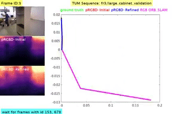

|
I am a research scientist at TCS Research, where I work on problems related to computer vision, graphics and deep learning. Prior to this, I was working at NEC Laboratories America, with Prof. Manmohan Chandraker, Dr. Quoc-Huy Tran, and Dr. Pan Ji on self-improving framework for SLAM. I received my PhD from IIIT-Delhi, where I was advised by Dr. Saket Anand and funded by the Visvesvarya PhD fellowship. I am the recipient of Chancellor's Gold Medal for academic excellence in B.Tech (Computer Science and Engineering) 2008-2012. Research : I am interested in developing robust solutions for the following problems. Computer Vision + Deep Learning
|


Updates
Awards
Research Publications
-
 REGroup: Rank-aggregating Ensemble of Generative Classifiers for Robust Predictions
REGroup: Rank-aggregating Ensemble of Generative Classifiers for Robust Predictions
[ WACV, 2022 ]
Lokender Tiwari, Anish Madan, Saket Anand, Subhasis Banerjee
IEEE/CVF Winter Conference on Applications of Computer Vision (WACV), 2022
[Project Page | Code ] -
 DeepDraper: Fast and Accurate 3D Garment Draping over a 3D Human Body
DeepDraper: Fast and Accurate 3D Garment Draping over a 3D Human Body
[ ICCV, 2021 ]
Lokender Tiwari, Brojeshwar Bhowmick
Differentiable 3D Vision and Graphics
IEEE/CVF International Conference on Computer Vision
[PDF ] -
 Pseudo RGB-D for Self-Improving Monocular SLAM and Depth Prediction
Pseudo RGB-D for Self-Improving Monocular SLAM and Depth Prediction
[ ECCV, 2020 ]
Lokender Tiwari, Pan Ji, Quoc-Huy Tran, Bingbing Zhuang, Saket Anand, Manmohan Chandraker
European Conference on Computer Vision
[Project Page | PDF | Demo 1 | Demo 2 | Demo 3] -
 DGSAC: Density Guided Sampling and Consensus
DGSAC: Density Guided Sampling and Consensus
[ WACV, 2018 ]
Lokender Tiwari, Saket Anand
IEEE/CVF Winter Conference on Applications of Computer Vision
[PDF | Code ]
-
 Robust Multi-Model Fitting using Density and Preference Analysis
Robust Multi-Model Fitting using Density and Preference Analysis
[ ACCV, 2016 ]
Lokender Tiwari, Saket Anand, Sushil Mittal
Asian Conference on Computer Vision
[PDF | Code ] -
 Fast Hypothesis Filtering for Multi-Structure Geometric Model Fitting
Fast Hypothesis Filtering for Multi-Structure Geometric Model Fitting
[ IEEE ICIP, 2016 ]
Lokender Tiwari, Saket Anand
IEEE International Conference on Image Processing
[PDF ]
Patents
-

Pseudo RGB-D for Self-Improving Monocular SLAM and Depth Prediction
Quoc-Huy Tran, Lokender Tiwari, Pan Ji, Manmohan Chandraker
NEC Laboratories America, Inc.
Application #US/16/987,705
[ PDF ]